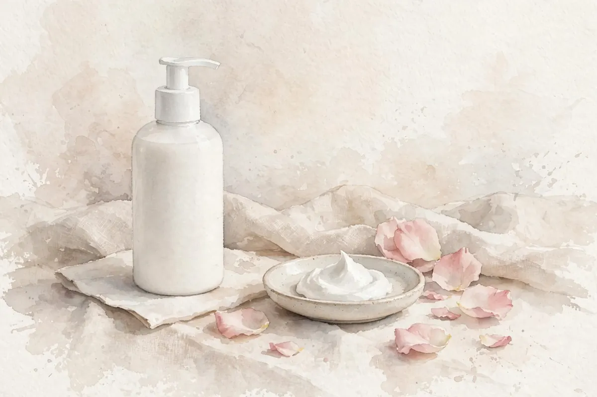

トップ ＞ スキンケア ＞ クレンジングミルクの表示の読み方と、使うときの段取り
クレンジングミルクの表示の読み方と、使うときの段取り

クレンジングミルクは、乳液のようなテクスチャーでメイクとなじませるタイプのクレンジングです。施術の現場でも、洗い上がりの感触や、肌への触れ方について聞かれることがあります。オイルやジェルと比べると、ミルクは手のひらでのばしやすく、こすらずに使えるのが特徴です。この記事では、クレンジングミルクの表示の読み方と、使うときの段取りを整理します。特定の商品の話ではなく、ミルクという形のクレンジングの使い方の考え方です。
パッケージの表示で見るポイント
まず確認したいのは、使用量の目安です。パッケージには「さくらんぼ粒大」「2〜3プッシュ」といった量の案内が書かれていることが多いです。ミルクは量が少ないと、肌の上で指がすべりにくくなり、こすってしまう原因になります。表示の量を目安に、顔全体に行き渡る量を手のひらに出すのが基本です。量は商品ごとに違うので、はじめて使うときは表示をよく読んでから始めます。
次に、洗い流すタイプか、ふき取るタイプかを確認します。「洗い流す」「ぬるま湯ですすぐ」「コットンでふき取る」など、使い方が書かれています。ふき取るタイプを水で洗い流したり、洗い流すタイプをコットンでふき取ったりすると、使い方の前提が変わってしまいます。表示の手順通りに使うことが大切です。
また、「ダブル洗顔不要」「洗顔料と併用する」といった案内も、表示で確認しておきたい点です。ダブル洗顔不要と書かれている場合は、クレンジングだけで洗い上がりを整える設計になっていることが多いです。併用する場合は、クレンジングのあとに洗顔料を使う段取りになります。
使うときの段取り
使うときの段取りは、「手のひらに出す、顔全体になじませる、表示通りに落とす」の3つです。まず、手のひらにミルクを出し、両手で軽くのばしてから顔にのせます。冷たいままのせるより、手のひらで少し温めてからのばすほうが、顔全体に広げやすくなります。
なじませるときは、指の腹でくるくると円を描くように、やさしく動かします。力を入れてこするのではなく、メイクが浮いてくるのを待つ感覚です。目元や口元など、メイクが濃い部分は、最後に指先で軽くなでるようにしてなじませます。時間の目安は、表示に「1分ほどなじませる」といった案内がある場合は、それに従います。
落とすときは、表示通りにします。洗い流すタイプは、ぬるま湯でやさしくすすぎます。熱いお湯は避け、手のひらですくったぬるま湯を顔にかけるようにして流します。ふき取るタイプは、コットンやティッシュでやさしく押さえるようにしてふき取ります。こすって落とすと、肌への負担になるので、押さえるようにするのがポイントです。
使い切りの目安と保管
ミルクタイプは、開封後の使い切りの目安を意識しておきたいアイテムです。パッケージには「開封後は早めに使い切る」といった案内がある場合があります。使い切りの期間は商品ごとに違うので、開封日をメモしておくと、目安がつかみやすくなります。
保管は、直射日光の当たらない涼しい場所が基本です。浴室に置きっぱなしにすると、温度や湿度の変化で中身の状態が変わることがあります。ポンプ式の場合は、ポンプの口元を清潔に保ち、使い終わったらキャップを閉めておきます。
ミルクタイプは、オイルタイプやジェルタイプと比べて、肌の上で広がりやすいのが特徴です。メイクの濃さや、その日の肌の状態に合わせて、タイプを使い分ける方もいます。朝は軽めのメイクの日、夜はしっかりメイクの日、といった使い分けをする場合は、それぞれのタイプの表示を確認して、段取りを決めておきます。旅行などで持ち運ぶ場合は、液漏れしないようにキャップを確認し、立てて保管できるポーチに入れておくと安心です。
肌に合わない感じがしたときは、使用をいったんやめて、気になる場合は皮膚科などの専門家に相談してください。この記事はミルクタイプの使い方の案内であり、商品ごとに表示がある場合は、そちらが優先です。
セラフィナ「ミルクは量が少ないとこすっちゃうの。表示の量をちゃんと手に出して、やさしくなじませてね」

セラフィナ｜美容の道具箱の案内役
「量と表示が分かれば、美容は失敗しない。」——セラフィナと白猫のモコが、買う前のチェックポイントを案内します。綺麗になりたい気持ちに正直に、でも表示は冷静に読むのが、このサイトの約束です。